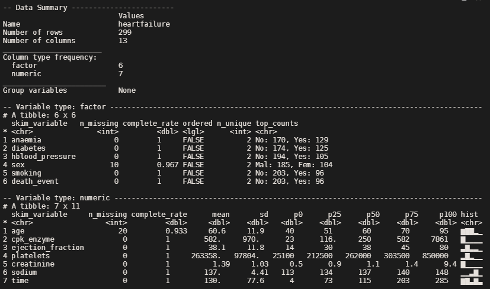

Data exploration in R
These are some of the packages that I find useful for data exploration. Basically, this post serves more as my note for future reference. I will list out packages (and some awesome functions from that particular package) rather than specific functions. Further, base R and tidyverse packages will not be included specifically in this list.
Load supporting packages
library(tidyverse)The data we are going to use is from dlookr package:
glimpse(heartfailure)## Rows: 299
## Columns: 13
## $ age <int> 75, 55, 65, 50, 65, 90, 75, 60, 65, 80, 75, 62, 45, ~
## $ anaemia <fct> No, No, No, Yes, Yes, Yes, Yes, Yes, No, Yes, Yes, N~
## $ cpk_enzyme <dbl> 582, 7861, 146, 111, 160, 47, 246, 315, 157, 123, 81~
## $ diabetes <fct> No, No, No, No, Yes, No, No, Yes, No, No, No, No, No~
## $ ejection_fraction <dbl> 20, 38, 20, 20, 20, 40, 15, 60, 65, 35, 38, 25, 30, ~
## $ hblood_pressure <fct> Yes, No, No, No, No, Yes, No, No, No, Yes, Yes, Yes,~
## $ platelets <dbl> 265000, 263358, 162000, 210000, 327000, 204000, 1270~
## $ creatinine <dbl> 1.90, 1.10, 1.30, 1.90, 2.70, 2.10, 1.20, 1.10, 1.50~
## $ sodium <dbl> 130, 136, 129, 137, 116, 132, 137, 131, 138, 133, 13~
## $ sex <fct> Male, Male, Male, Male, Female, Male, Male, Male, Fe~
## $ smoking <fct> No, No, Yes, No, No, Yes, No, Yes, No, Yes, Yes, Yes~
## $ time <int> 4, 6, 7, 7, 8, 8, 10, 10, 10, 10, 10, 10, 11, 11, 12~
## $ death_event <fct> Yes, Yes, Yes, Yes, Yes, Yes, Yes, Yes, Yes, Yes, Ye~We will create a few NAs in our data.
set.seed(2021)
heartfailure[sample(seq(nrow(heartfailure)), 20), "age"] <- NA
heartfailure[sample(seq(nrow(heartfailure)), 10), "sex"] <- NA1) dataMaid
library(dataMaid)One of the very useful function in dataMaid is makeDataReport() which give report on the data. By default it will give a pdf output, but other output options such as word and html are also available.
makeDataReport(heartfailure, replace = T)This is the output example in pdf.
2) DataExplorer
library(DataExplorer)General visualization:
heartfailure %>% plot_intro()
Since we have missing data, we can further visualize it:
heartfailure %>% plot_missing()
heartfailure %>% profile_missing()## feature num_missing pct_missing
## 1 age 20 0.06688963
## 2 anaemia 0 0.00000000
## 3 cpk_enzyme 0 0.00000000
## 4 diabetes 0 0.00000000
## 5 ejection_fraction 0 0.00000000
## 6 hblood_pressure 0 0.00000000
## 7 platelets 0 0.00000000
## 8 creatinine 0 0.00000000
## 9 sodium 0 0.00000000
## 10 sex 10 0.03344482
## 11 smoking 0 0.00000000
## 12 time 0 0.00000000
## 13 death_event 0 0.00000000We can also do a correlation plot
heartfailure %>%
select_if(is.numeric) %>%
drop_na() %>%
plot_correlation()
However, I do think correlation plot from corrplot packages gives a better and clean plot. Here is a plot from corrplot.
library(corrplot)
heartfailure %>%
select_if(is.numeric) %>%
drop_na() %>%
cor() %>%
corrplot(type = "upper")
Finally, we can get an overall html report from DataExplorer package using the function create_report().
3) dlookr
library(dlookr)We can assess normality of the data using this package. The code below will plot normality for all numeric variable.
heartfailure %>%
plot_normality()However, for the sake of the simplicity in this post, we will run only for one variable.
heartfailure %>%
plot_normality(age)
We can also get a correlation matrix plot from this package, and no need to remove the NAs and filter the numeric variable before running the function.
heartfailure %>%
plot_correlate()
Lastly, from dlookr we can get the overall report of the data exploration in pdf (and other formats as well). This report is quite comprehensive, have a look.
heartfailure %>%
eda_paged_report(target = "death_event")4) skimr
skimr package, especially skim() function did not display correctly when using the blogdown. Hence, I included the screenshot of the result that we will typically see in the R console.
library(skimr)
skim(heartfailure) 
So, from skimr we can get an overview that includes the histogram for numerical data as well.
5) outliertree
This package identify outlier using a decision tree. I will not go in detail about the approach, but for those who want to read further.
library(outliertree)
outlier.tree(heartfailure)## Reporting top 2 outliers [out of 2 found]
##
## row [251] - suspicious column: [creatinine] - suspicious value: [0.50]
## distribution: 96.000% >= 0.70 - [mean: 1.35] - [sd: 1.22] - [norm. obs: 24]
## given:
## [cpk_enzyme] > [1610.00] (value: 2522.00)
##
##
## row [32] - suspicious column: [cpk_enzyme] - suspicious value: [23.00]
## distribution: 98.958% >= 47.00 - [mean: 677.01] - [sd: 1321.86] - [norm. obs: 95]
## given:
## [death_event] = [Yes]## Outlier Tree model
## Numeric variables: 7
## Categorical variables: 6
##
## Consists of 369 clusters, spread across 48 tree branchesWe can further explore the detected outliers using histogram and boxplot. Let’s do for variable creatinine.
# histogram
hist(heartfailure$creatinine, breaks = 50, col = "navy",
xlab = "Creatinine",
main = "Creatinine level")
# boxplot
boxplot(heartfailure$creatinine)
Probably in the future I will delve into more detail about outlier detection and any awesome packages in R related to it. If I ever written any post about it, I will link it here.
Conclusion
These are some useful package that I find. I may edit this post in the future to add more additional data exploration package. Furthermore, there are shiny apps for data exploration as well, though I think it’s better to sticks with coded approach in data analysis/exploration. Thus, I did not explore those apps in this post. Another thing to remember is to set the variable type accordingly prior to the data exploration.
Hope this is useful!
References:
https://github.com/ekstroem/dataMaid
https://finnstats.com/index.php/2021/05/04/exploratory-data-analysis/
https://cran.r-project.org/web/packages/dlookr/vignettes/EDA.html
https://cran.r-project.org/web/packages/outliertree/vignettes/Introducing_OutlierTree.html
Tengku Muhammad Hanis
PhD student (Public Health Epidemiology)
My research interests include medical statistics and machine learning application.